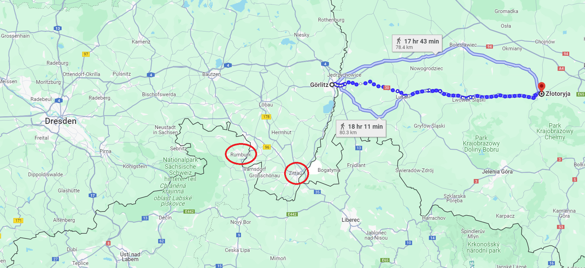
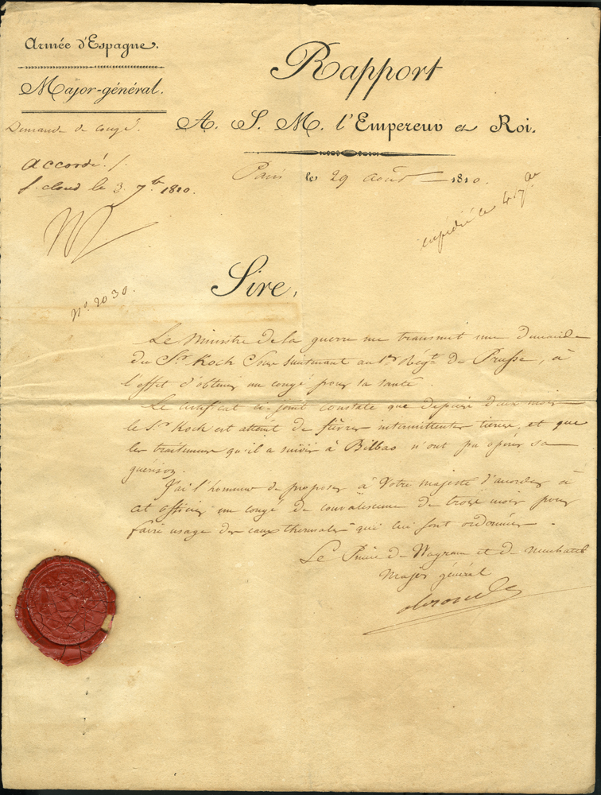
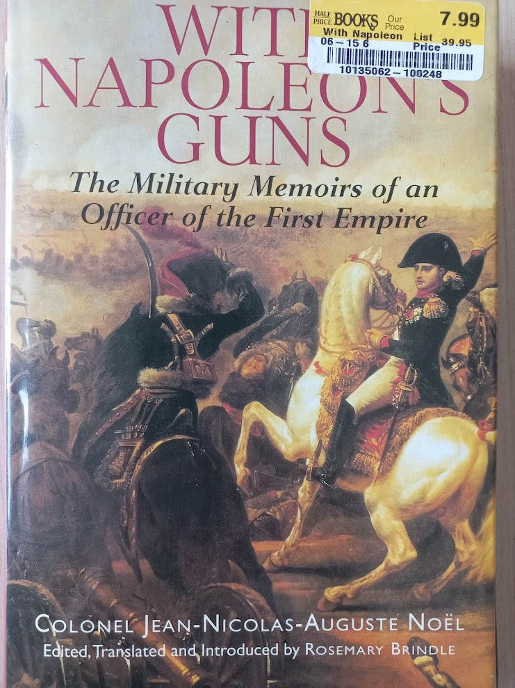

드레스덴 전투 (2) - "포위해버리죠 뭐"
게시: 2024-02-26T06:30:07+09:00
8월 23일, 나폴레옹은 분명히 시간, 공간과 병력의 모든 면에서 절대적인 열세에 있었습니다. 상황을 어떻게 타개할 것인지를 묘책을 짜내자면, 먼저 나폴레옹 같은 군사적 천재가 어쩌다 일을 이렇게 망쳐 놓았는지 생각해보는 것이 필요합니다. 그런데, 생각해보면 나폴레옹은 애초에 이 모든 상황에 대해 꽤 든든히 준비를 해두었습니다. 나폴레옹은 슐레지엔으로 블뤼허를 치러 가면서 이렇게 장담한 바가 있었습니다. "만약 적군이 드레스덴으로 진군해온다면, 드레스덴으로부터 방담은 2일 거리에, 빅토르는 3일 거리에, 그리고 내 근위 사단들은 4일 거리에 있으니, 이 모두가 드레스덴의 제14군단을 도우러 달려올 것이다." 기억하시겠지만, 빅토르의 제2군단 약 2만은 나폴레옹이 원래 보헤미아 방면군의 침투로로 예상했던 지타우에 있었고, 방담의 제1군단 약 3만은 원래 슐레지엔 침공군의 후방을 따라가기로 했었으나 나중에 나폴레옹의 지시에 따라 보헤미아 방면군의 또다른 예상 침투로인 럼부르크에 주둔하고 있었습니다. 이 2개 군단은 실제로 2~3일 안에 드레스덴으로 달려갈 수 있었습니다. 문제는 나폴레옹이 이끌고 달려갈 그랑다르메 주력이 머나먼 슐레지엔에 있다는 것이었습니다. 대략 120km 정도 떨어진 거리였으니 보통 행군이라면 5~6일, 아무리 강행군을 해도 4일 이상 걸리는 거리였습니다. 이게 그나마 다행이었던 것이, 슐레지엔 방면군의 랑제론이 블뤼허의 명령을 무시하고 너무나 거침없이 후퇴를 하는 바람에 나폴레옹이 뭔가 이상하다는 낌새를 채지 않았다면, 아마 나폴레옹은 생시르의 급보를 괴를리츠가 아니라 동쪽으로 3~4일 행군거리 더 떨어진 골드베르크에서 받았을 것입니다.

(추격하는 막도날과 막아서는 블뤼허 사이에 격전이 벌어졌던 골드베르크(쯔워토리아)는 괴를리츠에서 무려 78km 더 동쪽입니다. 드레스덴과 괴를리츠 사이에 붉은 색 원으로 표시한 럼부르크와 지타우의 위치를 눈여겨 보십시요.)
게다가 아무리 그의 그랑다르메가 쾌속 행군으로 유명하다고 해도, 지금 그가 거느린 병사들의 상당수는 불과 몇 달 전에야 처음 머스켓 소총을 손에 쥐고 군화를 신은 소년들에 불과했습니다. 아우스테를리츠 전투 당시의 다부 휘하의 군단병들처럼 고된 강행군을 며칠씩 밤새워 해낼 수는 없을 것입니다. 문제는 또 있었습니다. 그랑다르메 전체를 통제하는 두뇌는 나폴레옹 개인이었으므로 빅토르나 방담에게 즉각 드레스덴으로 달려가라는 명령을 내릴 수 있는 것도 저 멀리 동쪽에 있던 나폴레옹 본인 뿐이었습니다. 따라서 생시르는 나폴레옹보다 더 가까운 위치에 있던 빅토르와 방담에게 직접 연락을 하지 못하고 나폴레옹에게 급보를 보냈습니다. 따라서 지금 다시 나폴레옹이 명령서를 구술하고 인장을 찍어 급파발마로 다시 서쪽으로 달려 그 명령서를 전달한 뒤에야 빅토르와 방담이 움직일 수 있었습니다. 1분 1초가 아까운 판국에 거기에만도 하루 정도의 시간이 낭비되어야 했습니다.

(우습게 들릴지 모르겠지만, 당시 문서 작성의 효율성을 높여주는 연필과 펜, 종이 등의 질 좋은 문구류 및 손글씨가 정확하면서도 빠른 서기도 군 전체의 전투력과 효율성을 꽤 높여주는 역할을 했습니다. 저런 문서 작성을 신속하고 정확하게 해내야 군대가 더 빨리, 혼란 없이 움직일 수 있었으니까요. 저 편지는 1810년, 베르티에가 스페인 전선에 있던 프로이센군 코흐(Koch) 소위의 3개월 병가를 요청하며 나폴레옹에게 보낸 편지입니다. 맨 위는 Rapport (영어로 report)라고 제목이 달렸고, 그 밑에는 A S.M. l’empereur et Roi (to His Majesty Emperor and King)이라고 수신인이 적혀 있습니다. 아마 S.M.은 Sa Majesté (폐하)의 약자일 것입니다. 황제면 황제고 왕이면 왕이지 왜 '황제이자 왕'이라고 적혀있냐 하면 당시 나폴레옹의 타이틀이 프랑스인들의 황제이자 이탈리아의 왕이었기 때문입니다.)
그렇게 다급한 상황에서도 나폴레옹의 머리는 쉴새없이 돌아갔습니다. 전에 언급한 대로, 그는 이미 보버강을 넘어 블뤼허와 교전 중인 전방 군단들을 보버 방면군으로 편성하여 현지에 내버려두고, 강행군이 가능한 부대인 근위대 5만 정도만 이끌고 가기로 했습니다. 그리고 마르몽의 제6군단이 그 뒤를 따르도록 했습니다. 그리고 물론 가장 가까운 럼부르크에 있던 빅토르의 제2군단을 드레스덴으로 달려가도록 했습니다. 이상한 부분은 그 다음부터였습니다. 일단 방담의 제1군단은 드레스덴이 아니라 피르나 방면으로 가도록 했습니다. 그리고 자신의 근위대도 드레스덴이 아니라 피르나를 목적지로 행군을 시작했습니다. 나폴레옹은 이 위기를 대반전의 계기로 삼을 생각이었습니다. 그는 일단 '러시아군을 선두로 오스트리아의 전체 육군이 다 쳐들어왔다'라는 생시르의 보고를 믿지 않았습니다. 그는 베를린 점령을 위해 북진시켰던 우디노가 보내온 다소 어두운 보고서에 대해서도 '적군은 내가 현장에 없는 곳에만 항상 백만대군'이라며 부하들의 보고는 언제나 과장과 엄살로 점철되어있다고 불평하기도 했는데, 실제로 프랑스군이나 러시아군이나 프로이센군이나, 모두들 자신이 상대하는 적군의 수에 대해서는 과장을 하기 일쑤였습니다. 따라서 나폴레옹은 생시르의 제14군단 2만에 곧 달려갈 빅토르의 제2군단 2만이면 드레스덴에서 충분히 버틸 수 있다고 보았습니다. 나폴레옹이 내다본 그림은 그렇게 드레스덴에서 생시르가 버텨주는 동안 자신의 근위대 5만과 방담의 제1군단 3만이 피르나에서 엘베강을 건너 보헤미아 방면군의 후방으로 침투하여 그 퇴로를 끊어버리고 포위섬멸하는 것이었습니다. 이건 약간 어처구니가 없으면서도 정말 나폴레옹다운 아이디어였습니다. 그리고 이 작전안으로 인해, 나폴레옹의 드레스덴 전투는 매우 씁쓸한 결과를 낳게 됩니다.

(영화 람보 3에서, 탱크와 공격헬기로 중무장한 소련군이 람보와 그의 상관에게 항복을 권고하자 상관이 'You got any ideas?' (뭔가 묘안이 있나?)라고 묻습니다. 그때 람보의 대답은 'Surrounding them, sir.' (포위해버리죠 뭐) 였습니다. 이때 나폴레옹의 작전안은 딱 이 장면을 연상시키는 것이었습니다. 그 장면은 유튜브에서 보실 수 있습니다. https://www.youtube.com/watch?v=pu18G6ZgfRU ) 여기서 잠깐 시점을 당시 나폴레옹의 근위대에 있던 포병장교인 노엘(Jean-Nicolas-Auguste Noël) 대령의 관점으로 옮겨 보도록 하겠습니다. 아래의 굵은 글씨 문단은 그의 회고록을 그대로 번역한 것입니다.

(이 책은 원래 작가인 노엘이 72세의 나이때 쓴 비망록으로서, 1895년 'Souvenirs militaire d'un officier du Premier Empire' (제1제정시대 장교의 군사비망록)이라는 제목으로 출간된 것입니다. 나폴레옹보다 9살 연하였던 노엘은 1795년 샬롱(Chalons) 포병학교에서 1년간 교육을 받고 임관한 뒤, 제2차 이탈리아 원정에도 참전했고, 1809년 제5차 대불동맹전쟁 때는 막도날 원수 밑에서 피아베 전투 등을 치렀습니다. 이후 이베리아 반도 전쟁을 거쳐 러시아 원정에도 참전했고, 이후 독일과 프랑스를 거쳐 워털루 전투에도 참전했습니다.) With Napoleon's Guns by Colonel Jean-Nicolas-Auguste Noël ---------------- 적군은 곧 황제 폐하의 도착을 알게 되었고, 그들은 우리의 공격을 예상하고는 보버강에 놓인 다리를 파괴했다. 적은 우리 맞은 편의 고지를 점령하고 있었는데, 우리는 적의 포화에도 불구하고 재빨리 다리를 수리했다. 그 다음 날 전투가 벌어질 것이 예상되었지만, 아직 황제 폐하와 승부를 다툴 처지가 아니라고 생각한 블뤼허는 퇴각해버렸다. 아군은 그 뒤를 추격하여 골드베르크까지 다다랐는데, 여기서 전투가 벌어져 많은 적군이 죽었고 도시는 재빨리 점령되었다. 우리 근위대가 아직 골드베르크에 도착하기도 전에 황제 폐하께 적군이 카츠바흐강을 다시 건너 퇴각했다는 보고가 날아왔고, 우리는 뢰벤베르크로 되돌아왔다. 황제 폐하께서는 제3, 제5, 제11군단으로 하여금 막도날 원수 지휘하에 적을 추격하도록 하셨다. 연합군의 주력부대(보헤미아 방면군을 지칭:역주)가 예상보다 일찍 움직였다. 슈바르첸베르크의 의도가 나폴레옹의 추격으로부터 블뤼허를 구해내려는 것이었는지 혹은 황제 폐하께서 자리를 비우신 틈을 타서 우리의 작전 중심지인 드레스덴을 치려는 것인지는 모르겠지만, 슈바르첸베르크는 전병력을 이끌고 엘베강 좌안을 따라 보헤미아의 산맥으로부터 내려와 드레스덴을 향했다. 황제 폐하께 이에 대한 보고가 전해지자 우리는 강행군으로 엘베강으로 가야 했는데, 거기까지의 거리는 40리그에 달했다. (역주: 영국의 1리그는 약 4.8km이지만 프랑스의 1리그는 약 3.25km, 즉 40리그는 약 130km입니다. 당시 나폴레옹은 괴를리츠 동쪽에 있었으므로 실제 행군 거리는 아래 지도처럼 95km가 아니라 아마 120km 정도였을 것입니다)

우리는 23일에는 괴를리츠, 24일에는 바우첸을 거쳤다. 그 일대의 병력 집중과 혼잡은 말할 수 없이 심하여 나는 밤에 묵을 곳을 찾을 수 없을 정도였다. 우리가 향한 곳은 드레스덴이 아니라 그 상류쪽에 있는 피르나(Pirna)였다. 우리는 가던 길에서 벗어나 오른쪽에 있는 그 도시로 향했고 다시 좌회전하여 슈토플렌(Stoplen)으로 행군한 뒤 매우 밤 늦은 시간에야 거기에 도착했다. 보병부대들은 4일간 40리그를 행군했다. 이 행군으로 나폴레옹의 의도는 명확해졌다. 적군이 보헤미아 산맥에서 내려와 드레스덴을 향해 진군한다는 것을 알고 나서, 황제 폐하께서는 엘베강을 예전에 피르나에 지어놓은 다리로 건너기를 원하셨다. 그렇게 하여 적의 유일한 퇴로인 산맥으로 가는 길을 끊은 뒤에 드레스덴을 등진 적군을 공격하는 것이 황제 폐하의 의도였다. 이를 위해서는 드레스덴의 방어 태세가 튼튼해야 했다. -------------------------- 과연 나폴레옹의 이 무모하면서도 적의 허를 찌르는 작전은 어떤 결과를 맡게 될까요? Source : The Life of Napoleon Bonaparte, by William Milligan Sloane Napoleon and the Struggle for Germany, by Leggiere, Michael V With Napoleon's Guns by Colonel Jean-Nicolas-Auguste Noël https://warfarehistorynetwork.com/article/napoleons-last-great-victory-the-battle-of-dresden/ https://en.wikipedia.org/wiki/Battle_of_Dresden https://libarchives.unl.edu/project/29072/